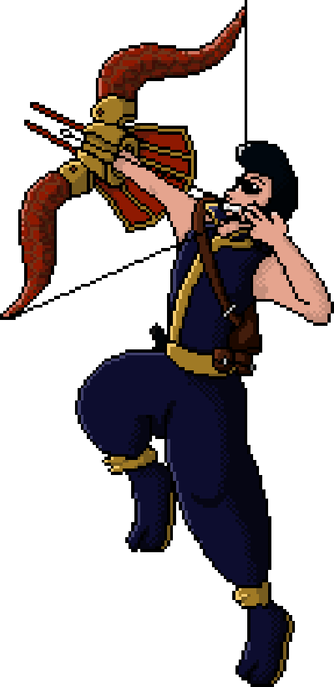

Here’s a small showing of some of my artistic endeavours. Over quite a few years,
I’ve been learning this for the express purpose of making Mega Man Echoes eventually.
Pixel Art
I used to make vector art using Adobe Flash, of all things, but these days, I only make
pixel art. I use Microsoft Paint and Krita to create my artworks.
Archie, my D&D character

close
Ganyu from Genshin Impact
close
Artwork for My Mega Man 7 Project
These are for an art/music project where I am recreating the entire Mega Man 7
soundtrack in 8-bit (it was originally on the Super Nintendo Entertainment System,
which is a 16-bit system). All of the music is complete, I just have to finish a bit
more art and edit everything together.
close
close
close
Music
My primary musical skill is transcription, which is what I use to make covers of songs.
I use this to make 8-bit versions of songs, using a tool called FamiTracker. It
simulates the limitations of the Nintendo Entertainment System’s audio, allowing for
authentic 8-bit music. It’s a bit cumbersome to use, but some great chiptunes have come
out of it (the soundtrack of the game Shovel Knight was made using this if you want to see
an example of professional usage of it). I also transcribe music into a tool called
Musescore, used for writing musical scores for various instruments. I primarily use piano
(though, I can’t actually play the instrument). Here are some pieces I’ve created. The first
two songs are from the aforementioned Mega Man 7 Project.